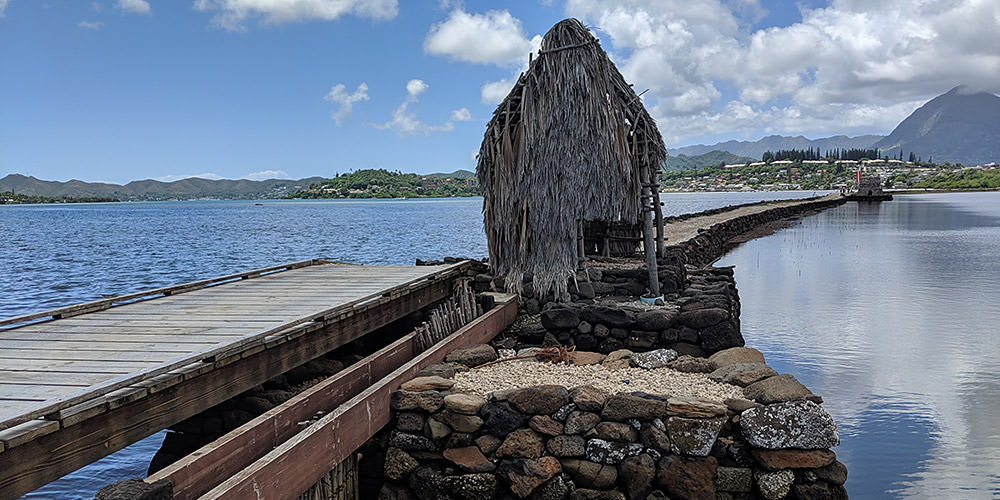

Native Hawaiian Culture
Indigenous peoples have profound connections with their native lands, territories, and resources. For hundreds of years, Native Hawaiians have coevolved with the natural environment of these islands and have accumulated deep knowledge and understanding of their ancestral lands and seas. Today, Native Hawaiians continue to rely on the environment as a primary source and foundation for Hawaiian culture and worldview.
According to Hawaiian cosmology, Native Hawaiians have a unique kinship relationship with the natural world. The Kumulipo, a Hawaiian creation chant, depicts the power of the cosmos erupting into motion and heat that causes natural elements to inspire creation as evolving out of the night by the gradual accumulation of life forms. Beginning with the coral polyp in the first wā or era, the Kumulipo announces the existence of the whale in the second wā. "Hānau ka palaoa noho i kai” - born is the whale living in the ocean. Eventually, humans are born from this common origin.
Native Hawaiian culture acknowledges the whale as an ancient being. They have been honored as ʻaumākua which are family or personal gods, deified ancestors who might assume the shape of either animals, plants, or natural phenomena. Native Hawaiian families and individuals have reciprocal relationships with their ʻaumākua. ʻAumākua are prayed to and sometimes fed while they warn and reprimand mortals through dreams, visions, and other omens. These traditions were common practice when Hawaiian religion and spirituality were more prevalent. Today, there are families and individuals that continue to perpetuate these beliefs and practices.
Humpback whales and several other large whale species are known as koholā in the Hawaiian language. There are several place names in Hawaiʻi that are connected to the koholā. Koholālele, which translates as leaping whale, is the name of a fishpond in the land division of Kualoa on the island of Oʻahu. Kualoa is also historically known for the ivory of the palaoa or sperm whale that drifts ashore. In ancient times, an ivory tooth or niho was carved into a large tongue-shaped pendant and fastened to braided hair of ancestors to create a sacred object known as a lei niho palaoa or ivory pendant necklace. It represents a chief’s status and authority to speak which is based on his or her genealogy.
Whales have also long been revered as physical manifestations of Kanaloa, god of the sea and open-ocean voyaging. Kanaloa is also another name for the island of Kahoʻolawe, known in pre-contact times as a training center for the art and skill of open ocean navigation. After the attack on Pearl Harbor, the U.S. military used Kahoʻolawe as a bombing range.
In the 1970s, the Hawaiian Cultural Renaissance began as a resurgence of a distinct cultural identity that drew upon traditional Kānaka Maoli (Native Hawaiian) culture. During the Hawaiian Cultural Renaissance, Native Hawaiians protested the bombing of Kanaloa/Kahoʻolawe by the U.S. military, and built the first Polynesian voyaging canoe seen in 200 years. Today, Kanaloa/Kahoʻolawe has become a center of teaching and training in environmental restoration, and the Native Hawaiian community has revitalized non-instrument voyaging and navigation. For over four decades now, the double-hull voyaging canoe, Hōkūleʻa, has sailed thousands of miles across the world and is a proud symbol for the Native Hawaiian community and all of Hawaiʻi.
Native Hawaiian culture is grounded in traditional values and principles that are based on ancestral relationships between people and places. The koholā is part of this immense cultural heritage found within oral histories, storied place names, and material culture. Although there have been drastic changes to the social, cultural, environmental, economic, and political qualities of Hawaiʻi for over two hundred years, Native Hawaiians have endured and adapted. Their culture continues to thrive and evolve as they navigate modern times because they rely on their traditional values and cultural principles that were forged in their ancestral homeland of Hawaiʻi in the presence of the whale.
Committed to Heritage
We at Hawaiian Islands Humpback Whale National Marine Sanctuary recognize that as sanctuary managers, we are public servants. We, therefore, have developed meaningful relationships within our island communities and with Native Hawaiians who are committed to perpetuating Hawaiian culture.
We cultivate these relationships through a strong network of partners, including the community-based Sanctuary Advisory Council, and through extensive public participation in education and outreach venues on different islands. We learn from organizations and entities that are committed to perpetuating cultural heritage, and we strive to create opportunities to integrate place-based knowledge into all aspects of our marine resource stewardship.